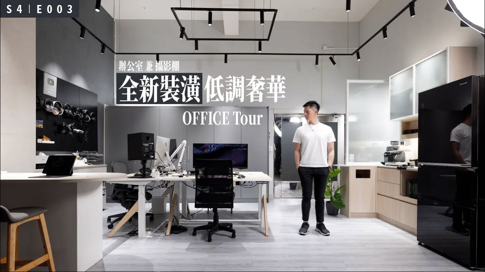
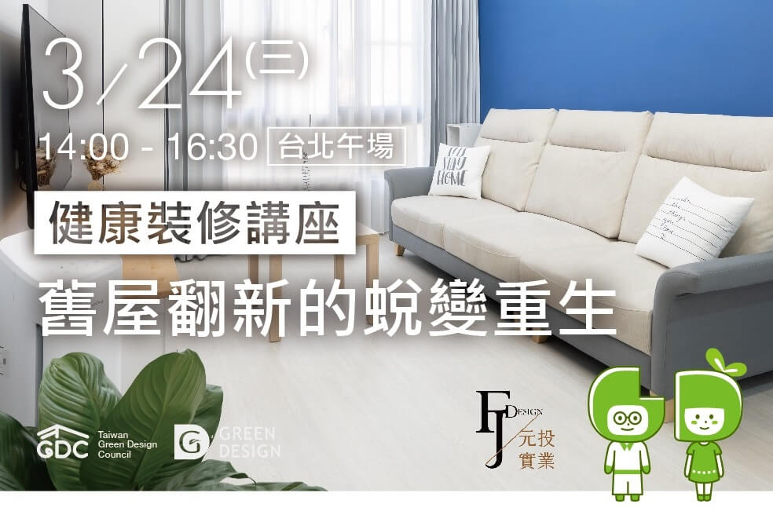

媒體報導
媒體報導
2022.06.07
家中隱形殺手甲醛，如何從板材油漆中預防？
待在家莫名其妙就有過敏、呼吸道的疾病發生嗎？你知道嗎？影響肺部疾病的因素不只有病毒而以唷！常常我們容易忽略的隱患就是甲醛。

2022.05.14
與 Alvinist / 艾爾文的生活紀錄 合作
在有限的預算下，做一個『辦公室兼攝影棚的大改造』，在一個大空間內要把玄關、茶水區、辦公區、攝影棚…等空間配置在一起，如何保留原有東西融合再利用，很成功的一次經驗與過程，影片是個全紀錄趕快點進來瞧瞧。
2021.12.25
孕媽居家設計大公開
如何打造最適合孕媽居住的育兒宅，是不少準父母在孕期的困擾之一吧！人生最脆弱的兩個階段是老人和幼兒階段，但對於女人來說，懷孕是第三種脆弱階段，必須時時小心謹慎，尤其是居家生活，當孕媽一個人承受兩個人的重量與責任時，身心狀態都不同，任何一點閃失都可能造成無法挽回的後果。
2021.12.22
孕媽居家設計大公開-有感說直播影片
ListenContent有感說特別邀請我們來直播分享「孕媽居家設計」，提供孕媽居家設計的相關小知識，包含避免不必要的高低差、浴室空間要注意哪些問題、怎樣的收納方式比較省力…等。

2021.03.15
綠裝修講座
這一場健康裝修講座主題是『舊屋翻新的蛻變重生』，帶大家了解我們公司擅長的舊屋翻新，要怎麼抓預算，哪些地方可以省下來不拆，哪些地方可以改變材質，來降低裝修預算。
2020.08.18
公益講座系列｜沒搞懂前，別輕易裝修！
舉辦綠裝修講座，為了讓更多的消費者知道我們一直在做對的事，對居住環境盡一份心力，讓大家住的健康、住的安心，了解在裝修時到底運用了那些材料。
2020.05.26
健康建築｜GD綠裝修認證-居住健康的安心保證
我們在2020年成為特約綠裝修據點，提供需要健康綠裝修的屋主，更容易找到我們，來為大家提供完善的服務。
2020.03.29
幼兒居家安全注意！針對幼齡兒童的家中隱患有哪些？
各位爸媽知道嗎？不僅在孕期需要注意孕媽的居住安全，在產後育兒階段，家中軟硬體設備的安全隱患更要注意，一個不小心就可能造成傷害，那針對幼齡兒童我們的居家裝潢可以怎麼調整才能讓寶寶安心成長呢？本集媽咪美學院，同樣邀請到專注居家美學與安全的約拿設計 兩位設計師 Jonah & Fanny 室內設計師 來分享，針對開始有行動能力的寶寶們，有哪些居家安全要注意！
2020.03.29
孕期居家裝潢安全性建議，打造媽媽寶寶的幸福空間
你有想過孕媽在家中的安全性嗎？摔倒、撞到家具、油漆揮發物質，都可能影響媽媽寶寶的健康，今天媽咪美學院就要來聊聊孕媽咪在孕期的居家安全與照護問題，媽咪們在孕期本身承受著巨大的身心壓力，若居家的空間還不能帶給媽咪安全感，那寶寶的健康則可能連帶受到影響！因此媽咪美學院請到約拿設計兩位設計師來跟聽眾朋友們聊一聊懷孕的期間，家中哪些裝潢設施要特別注意！
2020.03.29
家中的裝潢設施對媽媽寶寶安全嗎？
有沒想過寶寶過敏問題來自於家中的油漆或地板呢？有沒有想過你沒注意的櫃子、燈飾可能會造成寶寶危險呢？讓我們一起從居家的硬體設施安全來關注全家人的健康吧！